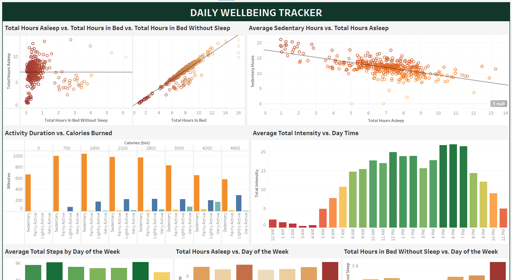

In this project, I employed both Python and Tableau to analyze fitness data from smart devices. The goal was to reveal insights into consumer behavior and offer overarching recommendations to improve the company's marketing strategy.


In this project, I used Python to clean up, transform and complite raw data on missile attacks in Ukraine. After analyzing the data, I visualized the insights in a Tableau dashboard.

In this project, I performed data cleaning and transformation tasks using Excel. I developed a dashboard to visually represent the processed data.

In this project I take raw housing data and transform it in SQL Server to make it more usable for analysis

In this project I use SQL to explore global COVID 19 data